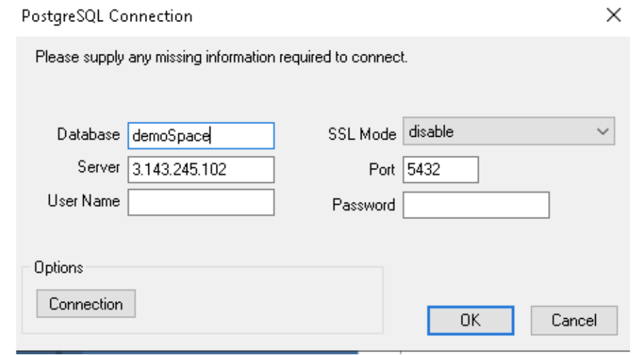
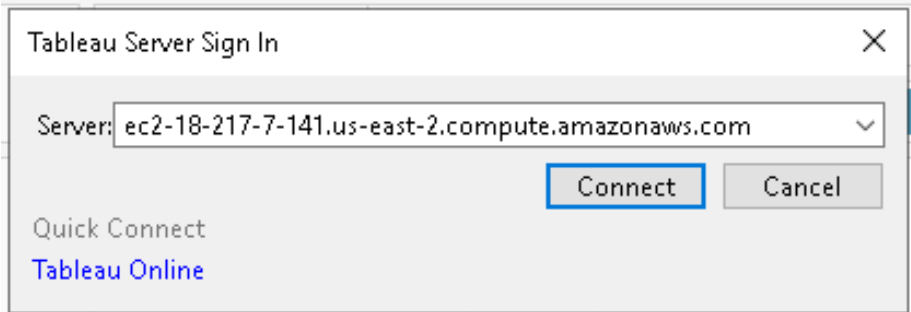
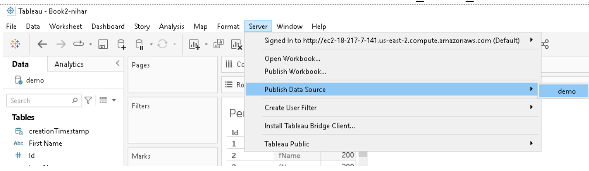
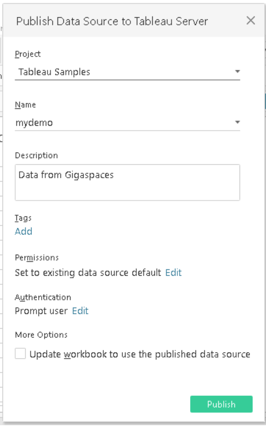
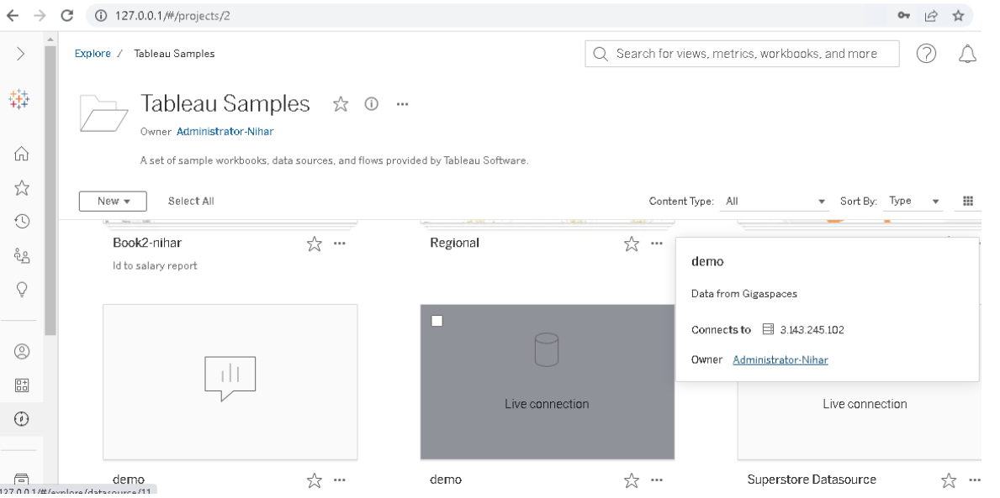
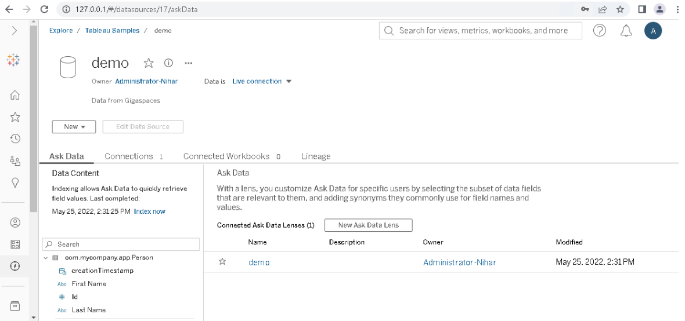
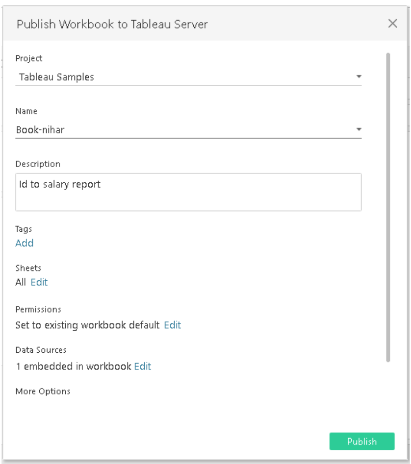
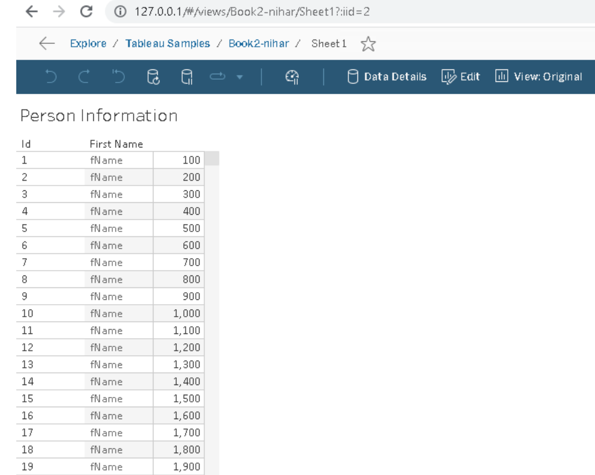

This topic describes how to integrate Tableau Desktop with
Run Gigaspaces, deploy Space and deploy data gateway.
Install Tableau using this link.
Install ODBC Driver for PostgreSQL to be used by Tableau.
Open Tableau desktop.
In the left panel where the title is "To a Server", choose "More..." and select "Other Databases (ODBC).
In the dialog, choose "Driver" and then choose “PostgreSQL Unicode(x64)”
Click Connect
The PostgreSQL Connection dialog box will appear as follows:

In the Connection dialog shown above, type the following:
Database: <space-name> for example: mySpace
Server: <gateway-endpoint-address> for example: localhost. In Kubernetes, it will be the LoadBalancer endpoint
Port: <data-gateway-bind-port> default: 5432
Choose SSL Mode: disable
Click OK
Click Sign In
To see your schema on the left panel where the title is "Schema", look for the plus ("+") icon. Enter schema name as “public”, then click on the plus icon.
Perform the same steps shown above to add tables.
Select an AWS Instance Type and Size for Tableau Server using this link.
Download and Install Tableau Server using this link.
Initialize Tableau Server:
Use this link to begin initialization.
Use this link to check status after initialization.
Use this link to log in to the Tableau server manager web interface, using these credentials:
username: <ec2-instance-username> (e.g. Administrator)
password: password: <ec2-instance-password> (getting from connect)
Sign in to Table server from Table Desktop:
Go to Tableau desktop
From Menu click Server and enter the Tableau server dns name:

It will redirect you to the web browser and ask for username and password (that you created as a part of Tableau server installation steps).
Go to Tableau desktop.
From Menu click on server -> Publish Data Source -> <data_source_name>

Enter name and description for this data source.
Also select project location on server (this will help you search it on Tableau Server):

Open Tableau web interface:
https://127.0.0.1:8850/
username: <ec2-instance-username> (e.g Administrator)
password: <ec2-instance-password> (getting from connect)
Go to Explore and go inside the project directory that you chose when publishing the data source from Tableau Desktop (e.g. Tableau Samples):

When you click on Demo it will open and fetch schema from the data source (Gigaspaces).
Once you see Data in “Live Connection” mode then it confirmed that Tableserver made a successful connection to Gigaspaces data source:

Go to Tableau desktop.
From Menu click on server -> Publish Workbook.
Enter name and description for this data source.
Also select project location on server (this will help you search it on Tableau Server):

Log in to Tableau server.
Go to explore and search workbook in selected project directory.
Click to display records from the workbook:
